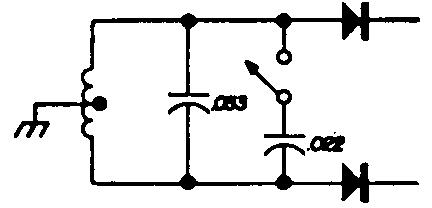
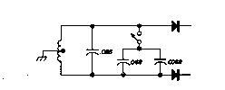
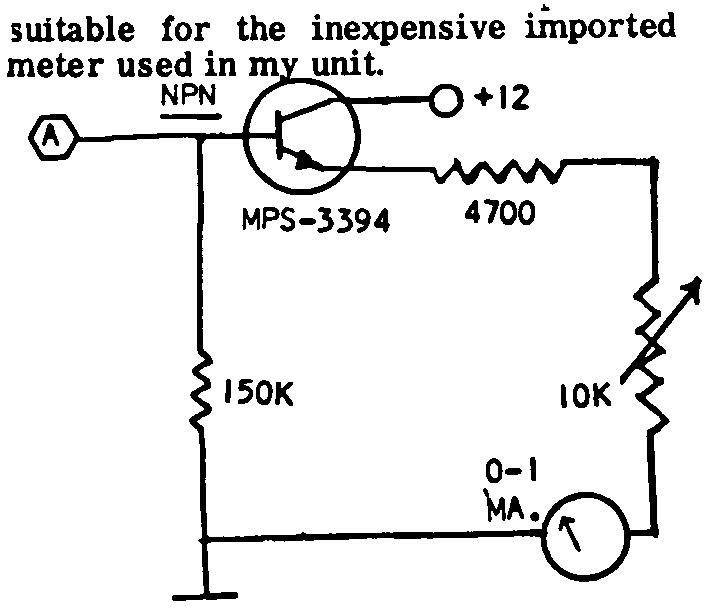
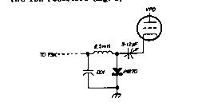
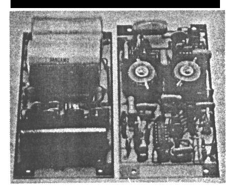
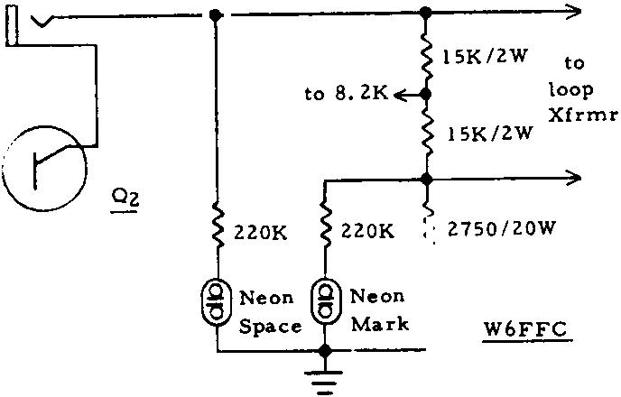
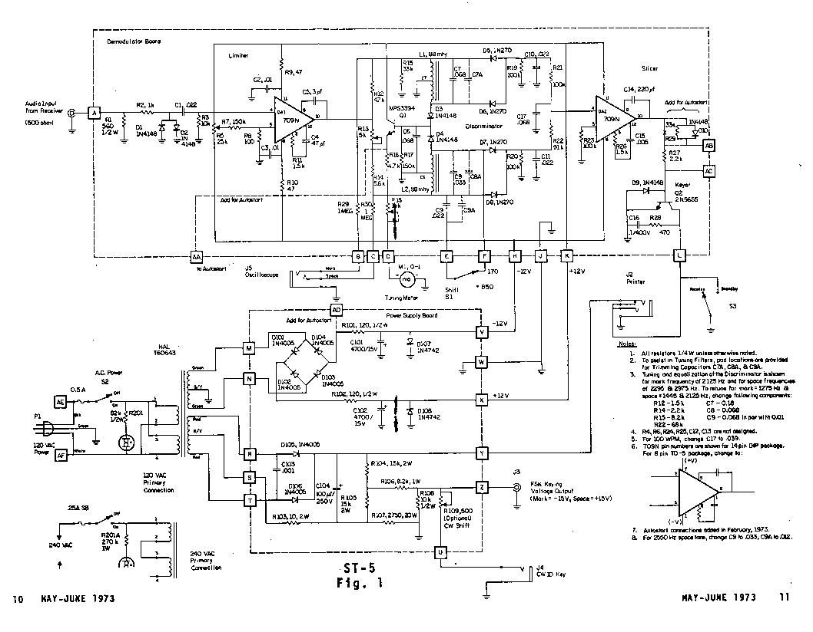

by IRVIN H. HOFF, W6FFC, May 1973
The Mainline ST-5 was originally Introduced in the RTTY JOURNAL in May, 1970. It has rapidly become one of the most popular demodulators for RTTY. As back issues have been un available for some time, the original article is being reprinted.
For those interested in 100 speed, change the 0.068 capacitor on the input to the slicer to a 0.039. A 741 may be used for the slicer if desired, in which case the 220 pf, 0.005 Mfd., and 1.5K components are left off, as the 741 is internally compensated. Regulated voltage has been added, as shown.
Keep in mind also that prices quoted were current at the time the article was originally written. Both Hal Communications and PEMCO, and possibly others, offer boards, components, kits and ready-to-use ST-5 units.
Many newcomers to RTTY have complained that a current yet simple de modulator hasn't been published for them to build. The W2PAT unit in the ARRL handbook is nearly 15 years old. In 1964 an attempt was made to replace the W2PAT design with a modestly priced updated unit, the TT/L-1. This design. together with the subsequent TT/L-2 is now the standard of the serious RTTY enthusiast. However, the original goal was missed by a country mile, since the TT/L-2 costs over $160 just for parts and has l4 tubes.
The ST-3 was a successful solid- state design that introduced integrated linear operational amplifiers to RTTY. It was still moderately complex, however, and fell short of the goal to supply the beginner with something that could be built in a few hours.
While developing a unit based primarily on ICs to replace the TT/L-2, a very simple modulator with great potential was developed: the ST-5. As with any simple circuit, the cost of the power supply is out of proportion with the rest of the unit. At 1970 prices the ST-5 costs only $14.50 less loop supply and a plus-minus 12-volt supply ($11).
The total cost of $33 is not overly impressive until you realize this unit can, if desired, be used as a building block for the more exotic ST-6. Almost every component used here can be used in that unit. The ST-5 is a basis from which the beginner can expand - it's not just a collection of parts that will find no further use when he is ready to broaden his horizons to more sophisticated equipment.
FEATURES
The ST-5 uses two operational amplifiers (Fig. 1 shown
at end of this article). One is an audio limiter, and the other
is a trigger stage to drive the keyer. It has a 175-volt loop
supply of the same type used in the TT/L, which provides
plus-minus voltages for keying a transmitter and also features
narrow-shift cw identification. Finally, the ST-5 has a
symmetrical plus-minus 12-volt power supply.
LIMITER
The 709C op amp has over 90-dB gain and is good to over
10 MHz. It makes an ideal limiter. The zener diodes on the input
don't assist in the limiting; they merely protect the 709C
against damage in the event of excessive audio input (hardly
likely but worth the protection). The limiter puts out square
waves and is so powerful it starts working on input signals as
low as 200 mV. The 25k pot merely balances the small offset input
voltage for maximum gain. This voltage varies slightly from one
unit to another, so a control pot was added rather than a fixed
resistor, which many units use.
DISCRIMINATOR/DETECTOR
It's difficult to use the same value inductor with
different capacitors and expect to obtain two similar filters of
equal characteristics. To get similar band-width, voltage output,
noise response, etc., some loading is necessary. Most simple
demodulators merely balance the voltage or ignore all the
problems completely. Without belaboring the point, it's not a
simple job to get all these factors to balance suitably; but it
is possible, and the Mainline units all have filters that have
been designed with care.
The ST-5 offers a choice of the 2125-2975 mark and space tones (considered standard), or the 1275-2125 low tones necessary in some modern receivers. (Actually nearly all these receivers respond beautifully to 2975 tones and higher, but a new BFO crystal is needed.) The best results come from the 2125-2975 tones, since the two frequencies are only about 28% apart while the 1275-2125 tones are 40% apart. thus it's a more difficult job to separate the harmonics and achieve proper filter design.
The detector features full-wave rectification for most efficient filtering of the DC ripple remaining after the audio has been rectified. A simple RC low-pass filter removes the remaining audio component.
SLICER
The slicer takes the small voltages from the filters and
changes them to roughly +10 volts for mark and -10 volts for
space, regardless of the original amplitude. This in reality is a
DC limiter, as a signal as small as a 100 uv DC or so will cause
the unit to saturate completely, either plus or minus, depending
upon the polarity of the applied signal voltage. The unit has so
much gain that at the cross-over point, a change at the audio
input as small as one or two Hz will cause this trigger stage to
flip from +10 to -10 volts. This is another way of saying shifts
as low as 3-4 Hz could be copied on the ST-5 if tuned in
properly.
KEYER STAGE
A 250-volt Motorola 20W transistor selling for $1.06 is
used. The normal loop-supply current for TTY machines is 60 mA.
This transistor has a large amplification factor and acts like an
on-off switch. When on, the power consumed in the transistor is
only 0.012 W; so in the ST-5 there's no way you could ever damage
that transistor.
An RC network in the 2N5655 collector takes care of the back EMF developed by the inductance of the selector magnets in the printer during the transition from space to mark. The transistor is biased off during space. A diode in the base circuit keeps this negative voltage below the point at which the base-emitter junction would be reverse biased.
STANDBY SWITCH
When S1 is closed, the unit is placed in mark. When S1
Is opened, the printer can follow whatever is fed into the
limiter from the receiver.
As explained previously, the unit has so much gain that a signal as small as 3-4 Hz can be copied if tuned correctly; this is called straddle tuning. However, for 170-Hz shift you may wish to add a switch that changes the space filter to the new frequency. Fig. 2 shows the way this would be accomplished if using the normal 2125-2975 tones, and Fig. 3 shows the circuit for the low tones of 1275-2125. This is merely an expedient and doesn't result in proper filter balance, but it provides good 170-shift reception with the switch closed, or normal 850-shift reception with it open.

Fig. 2. Switching circuit for adding 170
shift to space filter for 2125-2575 tones.

Fig. 3. Switching circuit for adding 170 shift to space filter for 1275-2125 tones.
TUNING INDICATOR
Provisions are provided for connections to the vertical
and horizontal amplifiers of a scope (Fig.1 shown at the end of
this article). It is customary to connect the mark signal to the
horizontal amplifier and space signal to the vertical amplifier,
although many reverse this method.
Most people prefer a scope indication, but an excellent tuning indicator is provided at point A (Fig. 1). A voltmeter connected to this point will give equal voltage indication for mark or space. With RTTY signals the meter should stand still. If it doesn't, retune the receiver until it does. If straddle tuning a signal, the meter may read less than normal, although it won't move. This is normal and merely indicates the shift being copied is not the correct shift for the filters you're using.

Figure 4: Optional Tuning Indicator
Fig. 4 also shows how a 0-1 mA meter may be added. An inexpensive NPN transistor is used, such as the MPS-3394, although any NPN transistor would be satisfactory here. The capacitor merely dampens the meter so it doesn't flip around too violently. If your meter is too damped, remove the capacitor or try a smaller value. This was installation in the transmitter. The components can be mounted on a small terminal strip and placed near the VFO tube under a convenient mounting screw which also serves as a ground return. The trimmer is connected to the cathode of the VFO tube and the tube replaced in its socket; thus, no changes of any type are made to the transmitter and its resale value is not affected. There should be room for several keyers if you wish to have the convenience of both 170 and 850 shift.
THE TRANSMITTER KEYER
Fig. 5 shows a typical FSK keyer for installation in the
transmitter. The components can be mounted on a small terminal
strip and placed near the VFO tube under a convenient mounting
screw which also serves as a ground return. The trimmer is
connected to the cathode of the VFO tube and the tube replaced in
its socket; thus, no changes of any type are made to the
transmitter and it's resale value is not affected. There should
be room for several keyers if you wish to have the convenience of
both 170 and 850 shift.
Although a 3-12 pF trimmer is shown in Fig. 5, some. transmitters only require a 1.5-7 pF trimmer. It is suggested that you do not substitute for the 1N270 diode as it is superior to most other types in this application.
If your signal is reported as "up side down," reverse the 1N270 diode. If you do not obtain sufficient CW shift with this connection (conduct on mark), the 500-ohm CW-shift pot should be connected to the opposite side of the 8.2k resistor at the junction of the two 15k resistors (Fig. 1).

fig. 5. To add FSK to literally any transmitter, connect a 2-12 pF trimmer to the cathode pin of the VFO tube.
COMPONENTS
The 709C op amps are supplied by various manufacturers
including Signetics, Fairchild, and Motorola. Prices are
constantly being reduced as de vices become available from more
com panies. When I first started working on a super deluxe
demodulator in the fall of 1967, I paid over $10 each. Now
they're too cheap not to use. The Motorola unit can be purchased
through most distributors, including Allied and Newark. The
Fairchild unit can be mail ordered from the firms below. Specify
the TO-S can, as this is easier to work with than the dual
in-line 14-pin type (same cost).
The diodes marked G in fig. 1 are 1N270 germanium at 32 cents each. Those marked SIL are most any silicon type, such as the 1N2069. The one in the loop supply should, however, be a minimum of 400 volts PIV. Fifty-volt PIV is suitable everywhere else.
The 88-mH toroids are available from various sources for about 4O cents each. They're wired in series for 88 mH, and the junction of the two windings is grounded.
If you have an accurate means of determining the frequency, you can tune the filters by removing turns of wire from each of the two sections con currently to keep the turns ratio in the two windings the same. One turn from each of the two windings will increase the frequency about 6 Hz at the 2125 frequency, for example.
Use Mylar capacitors, such as the Sprague Orange Drop. Twenty-five-volt capacitors are adequate, but you'll probably wind up getting 200V types. They are only 15-21 cents each.
The pots can be the inexpensive 39 cent Mallory PC board MTC types. Other power transformers may be used, but the Triad F-4OX is an excellent buy.
PRINTED-CIRCUIT BOARD
The printed circuit boards shown in the ST-5 in the
photographs hold all of the components except the two
transformers and the control switches. This greatly enhances
construction, and at the same time makes it possible for nearly
anybody to build an extremely nice looking unit. The printed
circuit board includes one section for the power supply and
another for everything else. The board may be split down the
middle and the two sections mounted back-to-back as I did in my
unit, or the board may be left intact and used with a more
shallow chassis.
Photo of boards from HAL Comm.

ADJUSTMENT
With no input signal, or with the input grounded, adjust the
pot on the limiter for zero volts DC at pin 6. If this isn't
possible, you'd better write me and explain thoroughly, as you
probably ruined the op amp somehow. By the way, unless. you get
too much voltage on pins 2 or 3, like the full power supply
voltage, or get the plus-minus hooked up backwards, it's very
difficult to ruin these things. By following even the most
elementary construction practices, you'll have no problems with
the 709C.
After balancing the limiter for zero volts output, connect the receiver and tune to maximum mark and note the indication on your tuning indicator (Fig 4.) or on a voltmeter connected to point A. Tune to space on the receiver and again note the reading. if the indications are not the same, adjust the 5k pot on the limiter output until they are. You have now finished all the adjustments and they should require no further attention at any time unless you switch to 170 shift, for instance. In this event you may or may not want to reset the filter balance pot. I suggest you leave it for the 850 setting and take what you get on the 170-switch position, as this is a somewhat artificial method of getting good 170-shift reception.
When transmitting be certain to first close the standby switch or you can get feedback, which will produce errors similar to those you would get when using a microphone if you didn't turn off the speaker.
OTHER OP AMPS
The 709C is to other op amps what the Ford V-8 was to other
automobiles. It not only led the way; it's still in use. The 709C
was (and is) one of the cheapest ICs of its type available. One
would gain very little and stand to lose a lot by trying to
substitute other units. The 741 and 748, for example, have a bit
more gain, higher input voltages, and require no frequency
compensation. Their biggest disadvantage here is that they're not
at all suited as audio amplifiers. At 2 kHz they have only 30-40
dB gain and make a poor audio limiter compared with the 709C. So
unless you know what you're doing, stick to the 709C.
*Hamilton Electro Sales, 340 East Middlefield Road, Mountain View, Calif. 94040 and G.S. Marshall Co., 732 North Pastoria Avenue, Sunnyvale, Calif. 94086 (also carries Signetics). If buying Motorola version, ask for the MC 1709CG. Texas Instruments 709 op amps are $1.50 each (or 7 for $10) from HAL Devices, Box 365H, Urbana, Illinois 61801; ask for SN72709L.
MARK-SPACE INDICATOR LAMPS
Adequate indicator lamps to show mark or space are shown in
the partial drawing of the loop supply. Any type of low-current
neons should be suitable. Their use does enhance tuning in a
signal and they help to indicate if a station is upside down or
not.
NORMAL-REVERSE SWITCH
No normal-reverse switch has been added to the ST-5. While
possible to incorporate one, (see the ST-5 schematic) it seems
hardly necessary. At my station, I do not recall having heard
more than 1-2 stations "upside down" in the past year.
Using the other sideband on the receiver normally accomplishes
the same thing as a reversing switch.
THE ST-5 AND 170 SHIFT:
At the time the ST-5 was originally designed, a majority
of stations were on 850 shift. These days, only a few stations
use 850 shift on H.F.; nearly every body having switched to 170
shift. If you wish to optimize the ST-5 for 170, you would want
to use the following component values: (ST-5 b.)
170 Shift Values
R15 lOOK
MARK & SPACE INDICATOR
NEONS

THE POWER SUPPLY
Several transformers are suitable for the loop supply such as
the Stancor PA-8421, or the Triad N51-X. Almost any transformer
rated for 24 volts C.T. will be suitable for the power supply, if
rated at least 200 mills. (The relay will take about 100-150
mills, depending upon brand.)
Hal Communications has a special transformer made exclusively for them by Stancor which combines both the loop and power windings. This saves not only space but money.
CONCLUSION
The ST-5 was designed as a simple but highly effective RTTY
demodulator using the best of currently available concepts. It
should be a very popular unit for some years to come, as it's
impossible to imagine at this time how any additional performance
could be made available, it's already ridiculous to talk in terms
of 90 + dB amplification. Only a completely different concept of
RTTY processing could outdate the ST-5, and that seems quite
unlikely to occur until we all get computer terminals in the
shack.
REFERENCES
1. RTTY, November, 1964; also QST, August, 1965.
2. RTTY Journal, September, 1967; also QST, May, June, 1969.
3. RTTY Journal, September, 1968; also QST, April, 1970.

Figure 1 - ST-5 Original Schematic Diagram